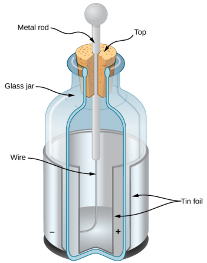
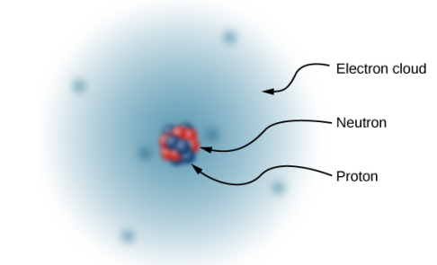

The ancient Greek philosopher Thales of Miletus (624-546 BCE) recorded that when amber (a hard, translucent, fossilized resin from extinct trees) was vigorously rubbed with a piece of fur, a force was created that caused the fur and the amber to be attracted to each other. Additionally, he found that the rubbed amber would not only attract the fur, and the fur attract the amber, but they both could affect other (nonmetallic) objects, even if not in contact with those objects.[1]
The English physicist William Gilbert (1544-1603) also studied this attractive force, using various substances. He worked with amber, and, in addition, he experimented with rock crystal and various precious and semi-precious gemstones. He also experimented with several metals. He found that the metals never exhibited this force, whereas the minerals did. Moreover, although an electrified amber rod would attract a piece of fur, it would repel another electrified amber rod; similarly, two electrified pieces of fur would repel each other.[1]
The American physicist and statesman Benjamin Franklin found that he could concentrate charge in a "Leyden jar", which was essentially a glass jar with two sheets of metal foil, one inside and one outside, with the glass between them. This created a large electric force between the two foil sheets.[1]
Franklin pointed out that the observed behavior could be explained by supposing that one of the two types of charge remained motionless, while the other type of charge flowed from one piece of foil to the other. He further suggested that an excess of what he called this "electrical fluid" be called "positive electricity" and the deficiency of it be called "negative electricity".[1]
With the experiments that he was able to do, this was a pure guess; he had no way of actually determining the sign of the moving charge. Unfortunately, he guessed wrong; we now know that the charges that flow are the ones Franklin labeled negative, and the positive charges remain largely motionless.[1]
Let's list the specific observations that we have of this electric force:[1]
Once it became clear that all matter was composed of particles that came to be called atoms, it also quickly became clear that the constituents of the atom included both positively charged particles and negatively charged particles.[1]
The negatively charged particle was the first one to be discovered. In 1897, the English physicist J. J. Thomson was studying what was then known as cathode rays. Some years before, the English physicist William Crookes had shown that these "rays" were negatively charged, but his experiments were unable to tell any more than that. The fact that they carried a negative electric charge was strong evidence that these were not rays at all, but particles.[1]
Thomson prepared a pure beam of these particles and sent them through crossed electric and magnetic fields, and adjusted the various field strengths until the net deflection of the beam was zero. With this experiment, he was able to determine the charge-to-mass ratio of the particle. This ratio showed that the mass of the particle was much smaller than that of any other previously known particle - 1837 times smaller, in fact. Eventually, this particle came to be called the electron.[1]
Since the atom as a whole is electrically neutral, the next question was to determine how the positive and negative charges are distributed within the atom. The New Zealand physicist Ernest Rutherford showed that the positive charges of the atom existed within a tiny core - called a nucleus - that took up only a very tiny fraction of the overall volume of the atom. In addition, he showed that the negatively charged electrons perpetually orbited about this nucleus, forming a sort of electrically charged cloud that surrounds the nucleus. Rutherford concluded that the nucleus was constructed of small, massive particles that he named protons.[1]
Since it was known that different atoms have different masses, and that ordinarily atoms are electrically neutral, it was natural to suppose that different atoms have different numbers of protons in their nucleus, with an equal number of negatively charged electrons orbiting about the positively charged nucleus, thus making the atoms overall electrically neutral. However, it was soon discovered that although the lightest atom, hydrogen, did indeed have a single proton as its nucleus, the next heaviest atom, helium, has twice the number of protons (two), but four times the mass of hydrogen.
This mystery was resolved in 1932 by the English physicist James Chadwick, with the discovery of the neutron. The neutron is, essentially, an electrically neutral twin of the proton, with no electric charge, but (nearly) identical mass to the proton.
Thus, in 1932, the picture of the atom was of a small, massive nucleus constructed of a combination of protons and neutrons, surrounded by a collection of electrons whose combined motion formed a sort of negatively charged "cloud" around the nucleus.
The very low-mass electrons can be more or less easily removed or added to an atom, changing the net charge on the atom (though without changing its type). An atom that has had the charge altered in this way is called an ion.
Sources: